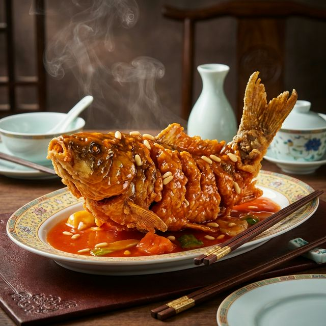

食材准备
- 主料： 黄河鲤鱼 1条 (约750g)
- 配料： 葱姜末 适量
- 淀粉糊： 淀粉、面粉、水 比例协调
- 糖醋汁： 白糖 150g, 香醋 100g
- 糖醋汁： 酱油 少许, 盐 少许
- 糖醋汁： 料酒、清汤 适量
烹饪步骤
改刀切花
将鱼洗净，在鱼身上每隔2.5厘米切一刀，切至鱼骨但不切断。将鱼肉翻开呈扇形，便于入味和造型。
挂糊
将调好的干淀粉糊均匀抹在鱼身上，确保切口缝隙内也挂匀。
炸制造型
拎住鱼尾，先将鱼头入热油锅虚按，定型后顺势放入全鱼。炸至外皮酥脆，鱼头和鱼尾上翘呈“跃龙门”状，捞出码盘。
炒芡汁
锅留底油，下葱姜末爆香，倒入糖、醋、酱油、汤烧开，淋入水淀粉勾浓芡，淋入少许热油激发出光泽。
浇汁出锅
将滚烫的糖醋汁均匀浇在酥脆的鱼身上，发出“吱吱”的响声。色泽红亮，酸甜适口。